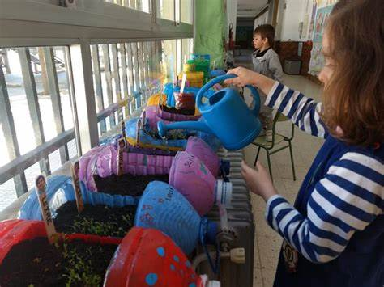

La huerta inclusiva responde a un concepto ideológico, cuya máxima aspiración es el logro de una verdadera educación de calidad para todos como un derecho humano básico, que responda a las particularidades y necesidades de cada sujeto, lo que le permitirá acceder equitativamente a las oportunidades.
¿Qué objetivos tiene la educación inclusiva? La inclusión educativa busca garantizar que todos los estudiantes, independientemente de sus habilidades, necesidades o discapacidades, tengan acceso a una educación de calidad y se sientan valorados y respetados en su entorno educativo.
fortalecimineto del aprendizaje sobre simbre de los estudiantes asigndos de inclusion de los grado 6 y 7 del instituto tecnico ambiental y la implimentacion de un sistema de riego.
fortalecer la huerta esistente para promover la enseñanza ,la educacion ambiental en la comunidad educativa de los niños de inclusion de los grsdos 6 y 7.